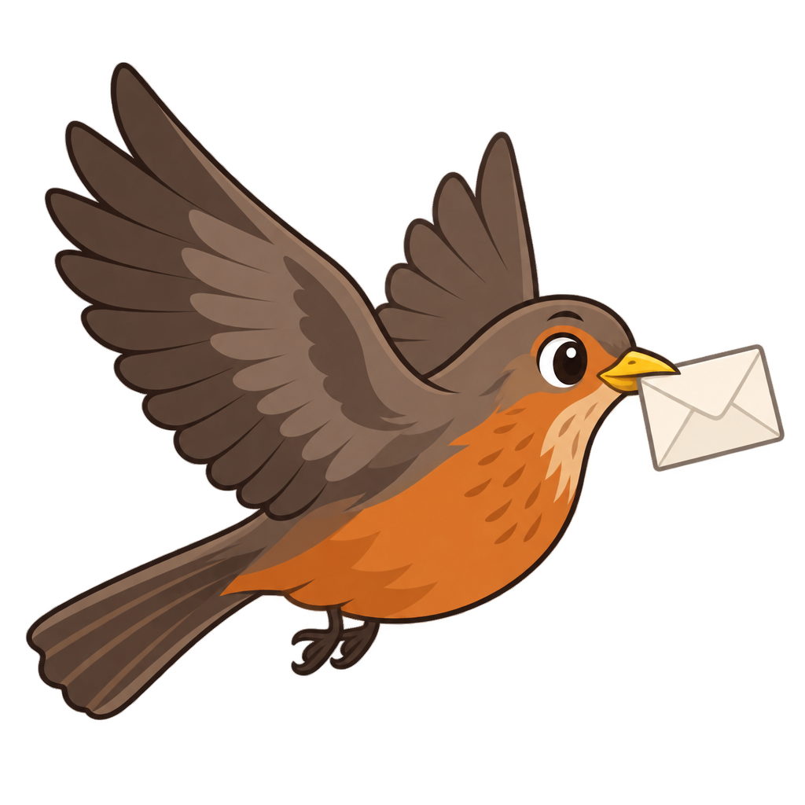
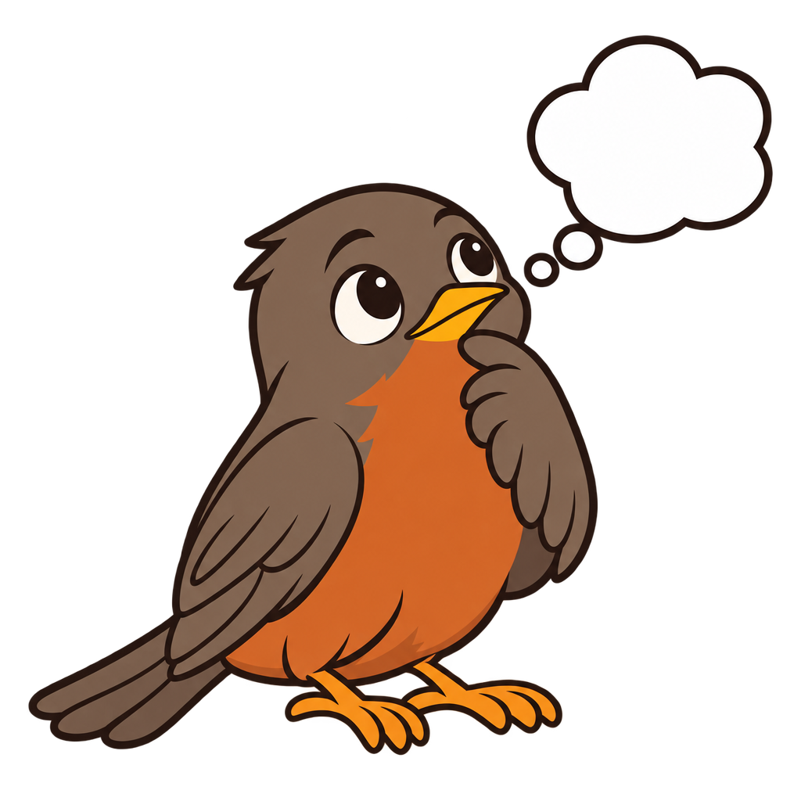
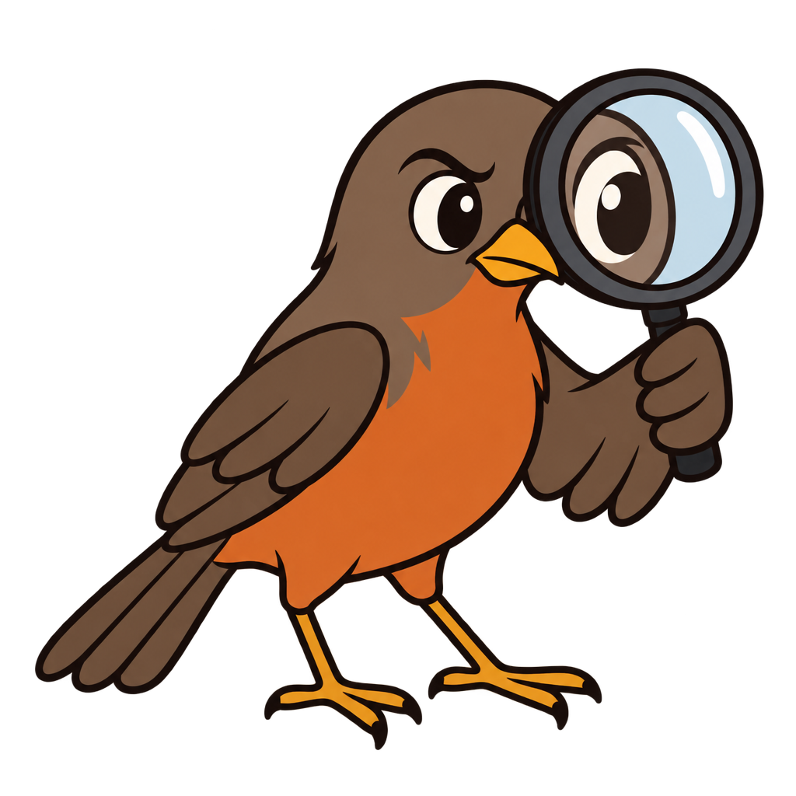
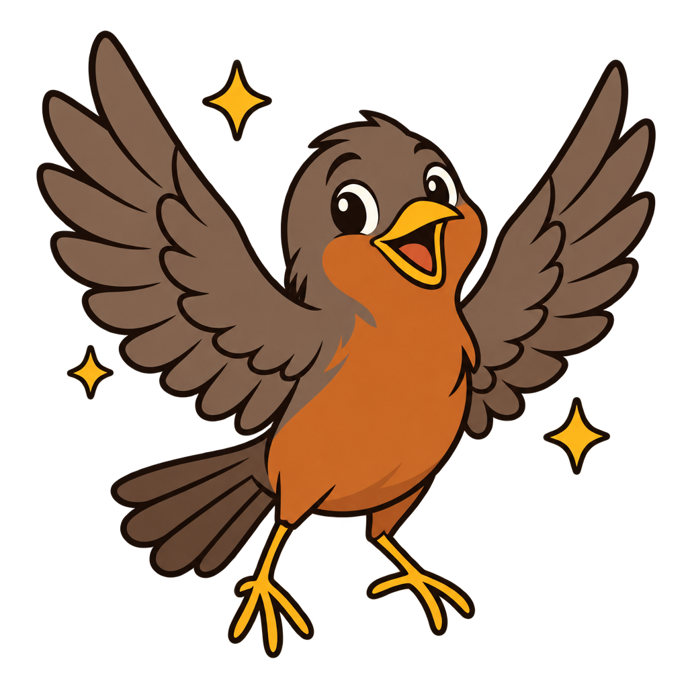
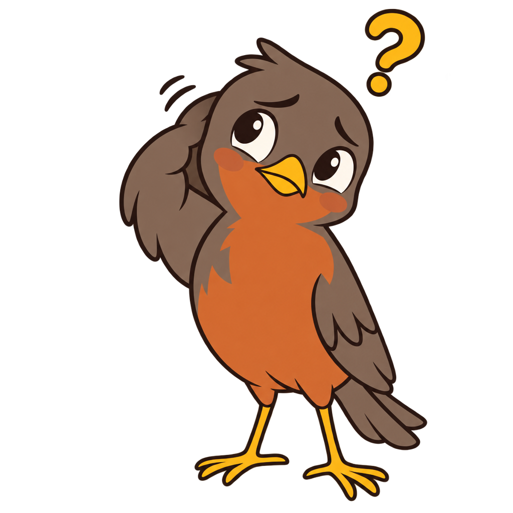
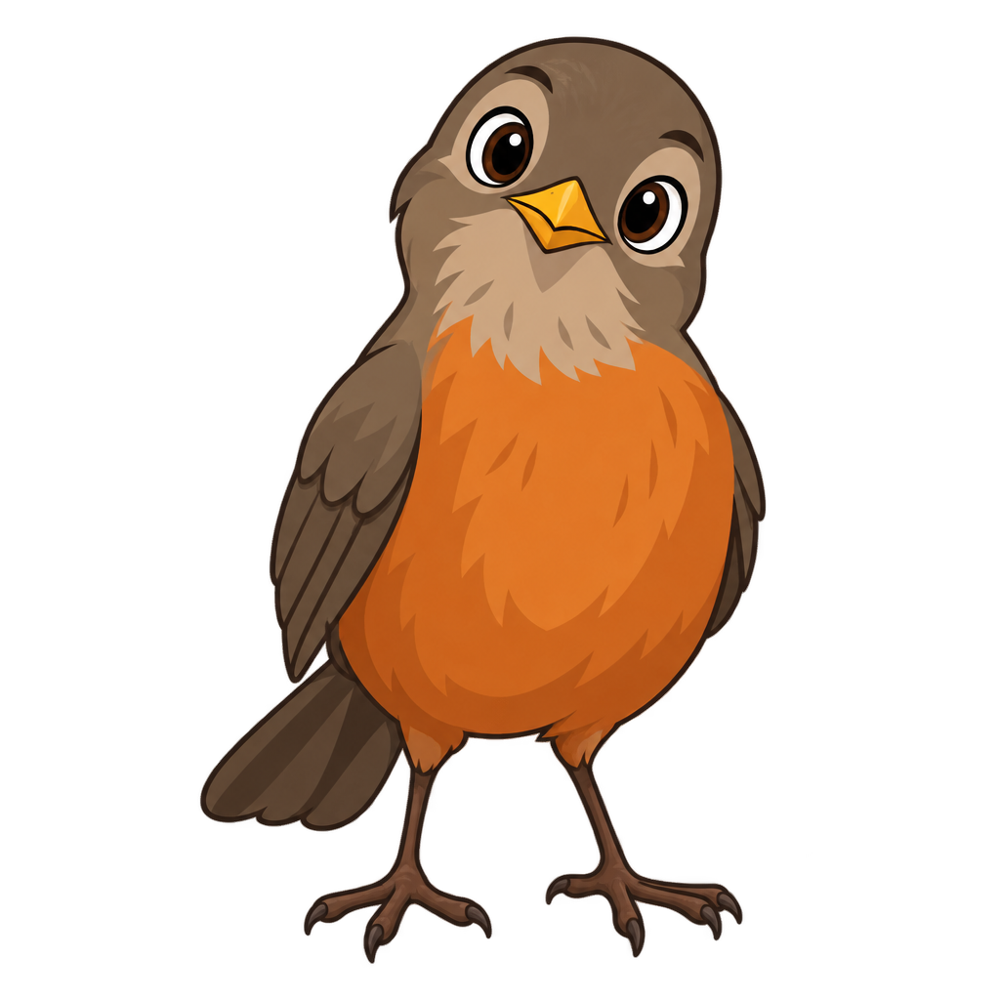

Exposalê · Ciência, Cultura e Tecnologia · Salesiano Itajaí

Sabiá
Um agente de IA que usa os sistemas da escola por você.
🎤 Vinicius Machado e Nathalia
Apresentadores convidados
😩 O problema
Pra saber como vocês estão na escola,
são cinco coisas em dois sistemas.
Dois sistemas, dois logins, e nenhum conversa com o outro.
💡 A ideia
E se, em vez de vocês aprenderem dois sistemas,
um agente usasse os dois por vocês?
👀 Antes da demonstração
Fica de olho no Sabiá

🤔 Pensando
entendendo a pergunta

🔎 Buscando
entrou num sistema da escola

🎉 Pronto
achou a resposta

😵 Confuso
algo deu errado, e ele avisa
Um bom agente mostra o que está fazendo. Você nunca fica no escuro.
🎬 Agora
Demonstração
ao vivo
Sem resposta pronta. Ele entra nos sistemas agora.
⚙️ Como funciona
⚙️ Três fases
FASE 1
🗺️ Planeja
decide quais fontes abrir, e em que ordem
→
FASE 2
🦾 Executa
navega de verdade nos sistemas
→
FASE 3
💬 Responde
com a fonte citada
A IA decide. Quem age é o código.
🤦 O que eu aprendi errando · 2
Ele lia a coluna errada
do boletim
Ele mostrava
6,0
uma prova solta do 2º semestre
A média era
8,5
a coluna MED, sete posições adiante
Mostrar nota errada é pior do que não mostrar nada.
🤦 O que eu aprendi errando · 3
Ele respondia com certeza,
e estava errado
📅 Pergunta"Qual foi a tarefa de segunda?"
O que ele faziaMostrava a de hoje, com a data de segunda escrita em cima.
📒 O professor escreveu"Sem tarefa."
O que ele anunciavaTarefa de Biologia: Sem tarefa.
Programa confiante não é programa certo. Agora ele confere antes de responder.
🫱 Sendo honesto
O que ele é, e o que ainda não é
É
- ✅ um agente de verdade
- ✅ 5 capacidades em 2 sistemas reais
- ✅ a mesma ideia das empresas de IA
Ainda não é
- ⏳ não altera nada no mundo
- ⏳ cada conversa começa do zero
- ⏳ não atende a escola inteira
Eu sei exatamente o que falta. Isso também é parte do aprendizado.

Agora é com vocês
Tentem enganar o Sabiá!
A Nathalia digita, e todo mundo vê no telão.
🤷 uma matéria que não existe
⏪ uma prova que já passou
📅 a tarefa de outro dia
🙃 uma pergunta que não é da escola